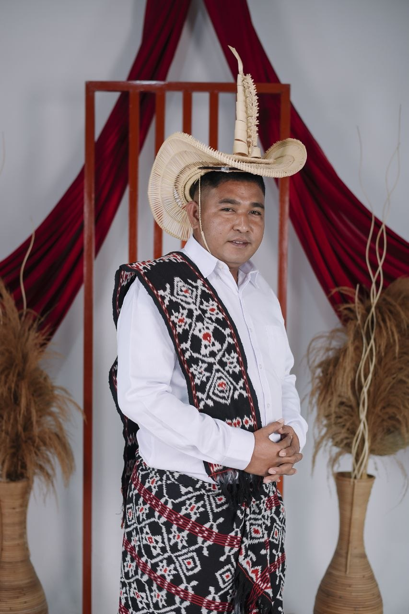
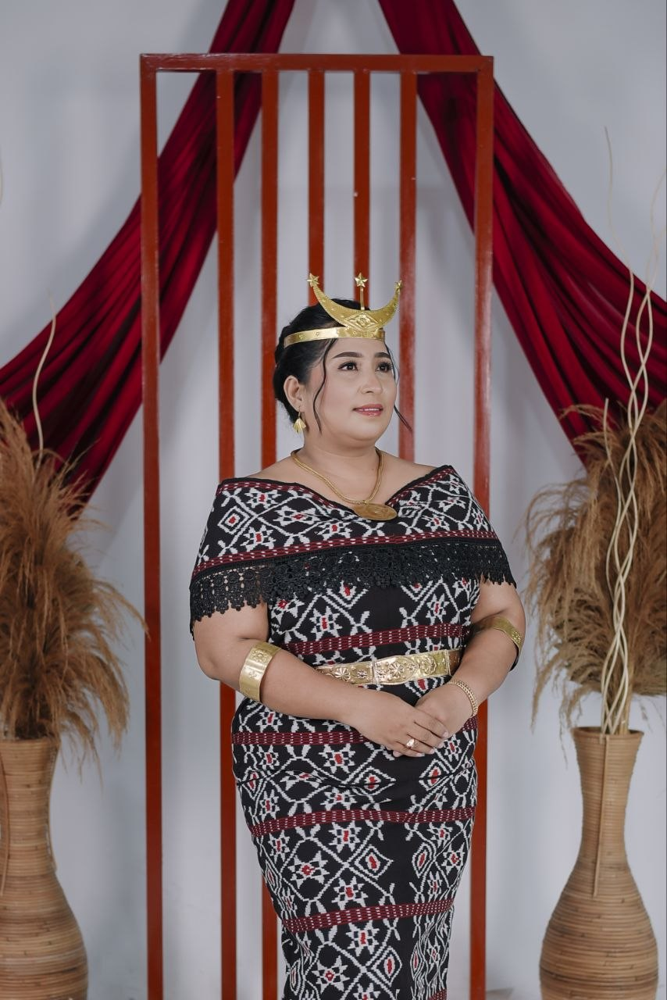

"Kasih itu sabar, kasih itu murah hati. Ia tidak cemburu, ia tidak memegahkan diri dan tidak sombong."
"Sebab itu seorang laki-laki akan meninggalkan ayahnya dan ibunya dan bersatu dengan isterinya, sehingga keduanya menjadi satu daging."
— Kejadian 2:24

Gereja GMIT Kota Kupang
Jumat, 21 Agustus 2026
Pukul 10.00 WITA
Rumah Bapak Yosep Tasi
Jl. Beringin 1 (belakang Gudang Cahaya Indah),
Kel. Sikumana
Doa restu Anda adalah karunia yang berarti bagi kami. Namun jika ingin memberi tanda kasih, dapat melalui: